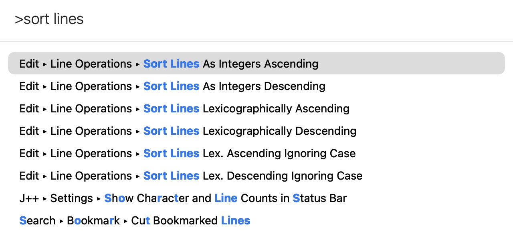
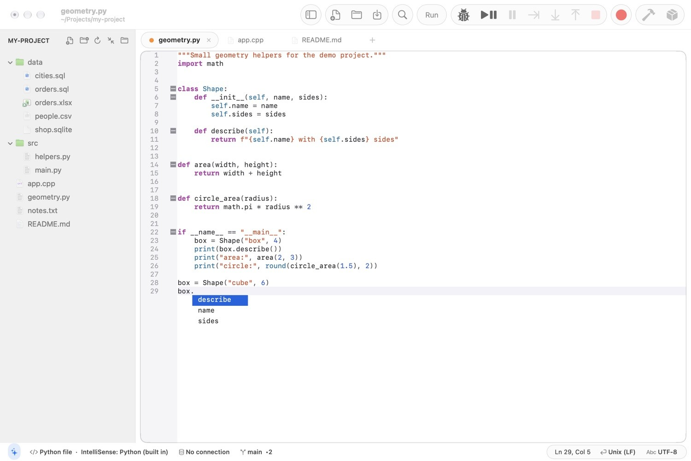

Nativo de verdad
Hecho con Cocoa para macOS, no una página web dentro de un envoltorio. Arranca rápido, se comporta como el resto de tu Mac, y toda la app es una descarga de unos 10 MB.
Versión 1.0.0 para macOS
jplus2 es un editor de código rápido y nativo para Mac. Descarga la Lite gratis para escribir en 95 lenguajes, o consigue el jplus2 completo para además ejecutar y depurar tu código, consultar tus datos con SQL, subir a GitHub y preguntar a un asistente de IA.
Gratis · 5.6 MB · macOS 12 o posterior · Apple Silicon e Intel
¿Quieres todo lo de esta página? El jplus2 completo viene en camino al Mac App Store.

Por qué jplus2
La mayoría de los editores empiezan vacíos y te piden armar el resto. jplus2 empieza completo, y está hecho para Mac y para nada más.
Hecho con Cocoa para macOS, no una página web dentro de un envoltorio. Arranca rápido, se comporta como el resto de tu Mac, y toda la app es una descarga de unos 10 MB.
Ejecutar, depurar, IntelliSense, SQL, GitHub e IA son parte de la app. No hay tienda donde buscar ni extensiones que elegir, configurar y mantener al día.
Ejecuta SQL en Databricks, Snowflake, PostgreSQL, MySQL, SQL Server y SQLite. Hasta un libro de Excel o un archivo CSV se convierte en una tabla que puedes consultar.
Conecta tu propia clave de la API de Claude, cualquier servicio compatible con OpenAI o un modelo que corre en tu Mac. jplus2 no tiene suscripción, y tu código se envía solo cuando tú lo pides.
Sin cuenta, sin analíticas, sin publicidad, sin rastreo. Las contraseñas, los tokens y las claves se guardan en el Llavero de macOS.
Liquid Glass en macOS 26, SF Symbols y SF Mono. La apariencia sigue a macOS, o se queda en clara u oscura si lo prefieres. Una sola app para Apple Silicon e Intel.
Funciones
Editar Lite y Completa
El motor de edición es Scintilla, conocido por su rapidez con archivos grandes. A su alrededor, jplus2 añade las herramientas que usas todo el día.
Ir a cualquier cosa Lite y Completa
Pulsa ⌘P y escribe. jplus2 encuentra un archivo con unas pocas de sus letras en orden, así que mpy encuentra src/main.py, y nombre:42 lo abre en la línea 42.
@ muestra los símbolos del archivo, : va a una línea y # busca texto
IntelliSense Solo versión completa
Autocompletado mientras escribes, ayuda de parámetros, descripciones al dejar el puntero sobre un nombre y subrayado de errores y advertencias.

Ejecutar y depurar Solo versión completa
Compilar y Ejecutar funcionan con todos los lenguajes del menú. La salida aparece debajo de tu código y, tras un error, el cursor salta a la línea que indica el compilador.

Bases de datos Solo versión completa
Guarda tus conexiones una vez y pulsa ⌘↩ en una pestaña SQL. Los resultados llegan a una tabla que puedes copiar o exportar como CSV.

Asistente de IA Solo versión completa
Haz una pregunta y el asistente lee el archivo que tienes delante y tu selección. Insert y Replace Selection llevan el código de la respuesta al editor en un solo paso de deshacer.

GitHub Solo versión completa
Conecta tu cuenta y jplus2 muestra tus repositorios. La barra de estado indica la rama, lo que hay por enviar o recibir y cuántos archivos cambiaron.

Lite y Completa
jplus2 Lite es una descarga gratuita desde esta página: un editor ligero y rápido para el texto y el código de todos los días. El jplus2 completo se obtiene en el Mac App Store, adonde llega pronto, y añade las herramientas que convierten un editor en un taller.
Gratis · descarga desde esta página
Todo lo necesario para leer y escribir código, en una descarga de unos 5.6 MB.
Versión completa · Mac App Store
El jplus2 completo, con todo lo de Lite y las funciones que siguen.
| Función | Lite | Completa |
|---|---|---|
| Resaltado de sintaxis, plegado y 95 lenguajes | ✓ | ✓ |
| Pestañas, buscar y reemplazar, macros, marcadores, codificaciones | ✓ | ✓ |
| Explorador de archivos, Ir a cualquier cosa, paleta de comandos, minimapa | ✓ | ✓ |
| Apariencia clara y oscura | ✓ | ✓ |
| IntelliSense: autocompletado, ayuda de parámetros y marcas de error | — | ✓ |
| Compilar y Ejecutar para todos los lenguajes del menú | — | ✓ |
| Depurador de Python con puntos de interrupción y ejecución paso a paso | — | ✓ |
| Comprobaciones integradas para JSON, XML, YAML, TOML, HTML y CSS | — | ✓ |
| SQL en Databricks, Snowflake, SQLite, Excel y CSV | — | ✓ |
| GitHub: explorar, clonar, confirmar, enviar, pull requests | — | ✓ |
| Asistente de IA que ve tu archivo | — | ✓ |
| Guía de jplus2 con capturas y todos los atajos | — | ✓ |
La versión del App Store funciona en el entorno aislado de Apple, así que Compilar y Ejecutar usan las herramientas que vienen con macOS y Xcode. Puedes tener las dos versiones instaladas a la vez.
Próximamente
El próximo lanzamiento trae jplus2 al iPad: el mismo motor de edición que en el Mac, hecho a medida para el tacto, el teclado y la app Archivos. Estas son las características que tendrá.
Próximamente
Planeado para el próximo lanzamiento. Los detalles pueden cambiar antes de publicarlo.

Resaltado de sintaxis y plegado de código para 95 lenguajes, con el editor Scintilla que impulsa jplus2 en el Mac.
Abre varios archivos en pestañas. Al volver, cada pestaña sigue ahí, incluso el texto que no habías guardado.
Una barra de búsqueda con el número de coincidencias, siguiente y anterior, y Reemplazar o Reemplazar todo.
Una lista con las palabras clave del lenguaje y las palabras que ya están en tu archivo, junto al cursor.
Abre archivos desde la app Archivos y edítalos donde están, incluidos UTF-16 y los finales de línea de Windows o Unix.
Vertical y horizontal, claro y oscuro según el sistema, ajuste de línea, números de línea, tamaño de texto cambiable y atajos de teclado.
Empieza como un editor enfocado. Las herramientas extra de la versión del Mac App Store todavía no están prometidas para iPadOS.
Todo lo de esta página está en la app la primera vez que la abres.
Nunca inicias sesión en jplus2. No hay nada que crear.
El asistente de IA usa tu propia clave o tu propio modelo local.
jplus2 no te mide ni envía nada a su autor.
Help ▸ jplus2 Guide describe cada función paso a paso, con capturas en claro y oscuro, y una tabla con todos los atajos de teclado.
Descarga jplus2 Lite hoy, o consigue el jplus2 completo en el Mac App Store.
Gratis · macOS 12 o posterior · Apple Silicon e Intel · 5.6 MB
En la versión completa, Compilar, Ejecutar y Git usan las herramientas de desarrollo de Apple. Instala Xcode, o sus herramientas de línea de comandos, para usarlas.